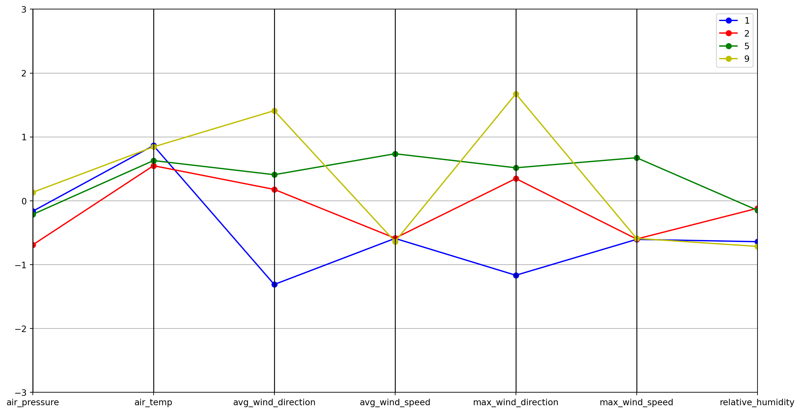

#In this blog, we'll dive into granular weather data to uncover patterns using Python and K-Means clustering. Analyzing minute-by-minute observations can reveal valuable insights into weather conditions.Exploring Weather Patterns through Machine Learning
Introduction
Exploring the Dataset
#Loading and Preprocessing the Data
#First, we load a dataset containing high-frequency weather data. It has measurements like temperature, humidity, wind speed, etc. taken every minute across many sensors. After sampling it down for feasibility, we do some prep like handling missing data.from sklearn.preprocessing import StandardScaler
from sklearn.cluster import KMeans
import pandas as pd
import numpy as np
from itertools import cycle, islice
import matplotlib.pyplot as plt
from pandas.plotting import parallel_coordinates
%matplotlib inlinedata = pd.read_csv('minute_weather.csv')
data
data.shape
data.head()
sampled_df = data[(data['rowID'] % 10) == 0]
sampled_df.shape
sampled_df.describe().transpose()
sampled_df[sampled_df['rain_accumulation'] == 0].shape
sampled_df[sampled_df['rain_duration'] == 0].shape
del sampled_df['rain_accumulation']
del sampled_df['rain_duration']
rows_before = sampled_df.shape[0]
sampled_df = sampled_df.dropna()
rows_after = sampled_df.shape[0]
rows_before - rows_after
sampled_df.columnsIndex(['rowID', 'hpwren_timestamp', 'air_pressure', 'air_temp',
'avg_wind_direction', 'avg_wind_speed', 'max_wind_direction',
'max_wind_speed', 'min_wind_direction', 'min_wind_speed',
'relative_humidity'],
dtype='object')features = ['air_pressure', 'air_temp', 'avg_wind_direction', 'avg_wind_speed', 'max_wind_direction',
'max_wind_speed','relative_humidity']
select_df = sampled_df[features]
select_df.columns
select_df
X = StandardScaler().fit_transform(select_df)
Xarray([[-1.48456281, 0.24544455, -0.68385323, ..., -0.62153592,
-0.74440309, 0.49233835],
[-1.48456281, 0.03247142, -0.19055941, ..., 0.03826701,
-0.66171726, -0.34710804],
[-1.51733167, 0.12374562, -0.65236639, ..., -0.44847286,
-0.37231683, 0.40839371],
...,
[-0.30488381, 1.15818654, 1.90856325, ..., 2.0393087 ,
-0.70306017, 0.01538018],
[-0.30488381, 1.12776181, 2.06599745, ..., -1.67073075,
-0.74440309, -0.04948614],
[-0.30488381, 1.09733708, -1.63895404, ..., -1.55174989,
-0.62037434, -0.05711747]])K-Means Clustering:
#K-Means looks for distinct clusters within the data by minimizing differences within clusters and maximizing differences between them. We have it generate 12 clusters to pull out nuanced weather patterns.kmeans = KMeans(n_clusters=12)
model = kmeans.fit(X)
print("model\n", model)
centers = model.cluster_centers_
centersC:\Users\amals\AppData\Local\Programs\Python\Python311\Lib\site-packages\sklearn\cluster\_kmeans.py:1416: FutureWarning:
The default value of `n_init` will change from 10 to 'auto' in 1.4. Set the value of `n_init` explicitly to suppress the warning
model
KMeans(n_clusters=12)array([[-1.1766631 , -0.8790686 , 0.44611167, 1.97215373, 0.53816535,
1.93363639, 0.91784593],
[-0.1645896 , 0.86439437, -1.31104187, -0.58965325, -1.16673474,
-0.60492156, -0.64099935],
[-0.69131268, 0.54908212, 0.17791583, -0.58588629, 0.34773746,
-0.5992676 , -0.11805412],
[ 1.19070339, -0.25445169, -1.15488277, 2.12034018, -1.05328454,
2.23705646, -1.13474293],
[-0.84377297, -1.19719742, 0.3745597 , 0.34187084, 0.47340403,
0.32988874, 1.36332625],
[-0.21407517, 0.62955451, 0.40836328, 0.7361672 , 0.51643607,
0.67406747, -0.14847653],
[ 0.05995891, -0.787475 , -1.19662281, -0.57027401, -1.04258893,
-0.58473883, 0.87783959],
[ 1.3659396 , -0.08042497, -1.20760939, -0.053456 , -1.07628299,
-0.03343366, -0.97722815],
[ 0.73330625, 0.43251486, 0.28689726, -0.53075968, 0.47401768,
-0.53692476, -0.77193636],
[ 0.13140762, 0.84390635, 1.41114256, -0.6388028 , 1.6750861 ,
-0.58964232, -0.71461687],
[ 0.23396264, 0.32004883, 1.88793525, -0.65184949, -1.55170412,
-0.57668218, -0.28325778],
[ 0.26128351, -0.99362107, 0.66249275, -0.54678248, 0.85356601,
-0.52916452, 1.15543024]])Visualizing and Interpreting the Clusters
#To interpret the clusters, parallel coordinate plots are perfect. They allow visualizing high-dimensional data across multiple variables. We write functions to easily generate plots coloring each cluster's center values. The visualization reveals interesting insights - clusters clearly capture different weather conditions like dry days or warm fronts. We can also spot transitional patterns between weather states.def pd_centers(featuresUsed, centers):
colNames = list(featuresUsed)
colNames.append('prediction')
# Zip with a column called 'prediction' (index)
Z = [np.append(A, index) for index, A in enumerate(centers)]
# Convert to pandas data frame for plotting
P = pd.DataFrame(Z, columns=colNames)
P['prediction'] = P['prediction'].astype(int)
return Pdef parallel_plot(data):
my_colors = list(islice(cycle(['b', 'r', 'g', 'y', 'k']), None, len(data)))
plt.figure(figsize=(15,8)).gca().axes.set_ylim([-3,+3])
parallel_coordinates(data, 'prediction', color = my_colors, marker='o')#Dry Days
P = pd_centers(features, centers)
P
parallel_plot(P[P['relative_humidity'] < -0.5])#Warm Days
parallel_plot(P[P['air_temp'] > 0.5])
#Cool Days
parallel_plot(P[(P['relative_humidity'] > 0.5) & (P['air_temp'] < 0.5)])Conclusion
#This analysis enhances our understanding of local weather dynamics. Granular clustering uncovers patterns hidden in the raw data. As weather data grows ever more abundant, machine learning techniques will continue unlocking its valuable secrets.